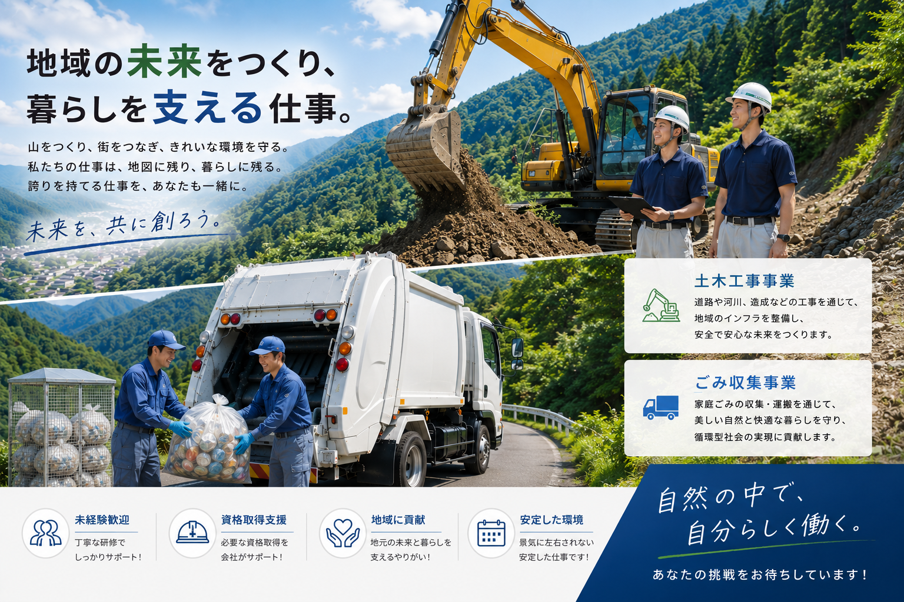

01
人を第一に考える。
仕事の前に、まず人。
お客様、協力会社、地域、そして仲間。
私たちは、まず相手を理解することから始めます。

Company
一つひとつの仕事に誠実であること。
一人ひとりとの信頼関係を大切にすること。
それが、私たちツカサの変わらない原点です。
Company-03 Promise
仕事の前に、まず人。
お客様、協力会社、地域、そして仲間。
私たちは、まず相手を理解することから始めます。

ヒアリングから設計、見積り、施工管理、施工まで。
収集運搬事業でも、地域の声に耳を傾けながら、本当に必要とされる仕事を考え続けます。
一つひとつの仕事に最後まで責任を持つこと。それが私たちの当たり前です。

信頼は、一日では生まれません。
一つひとつの誠実な仕事の積み重ねが、お客様との信頼につながり、協力会社との信頼につながり、地域から必要とされる会社へとつながっていく。
私たちは、その積み重ねを何より大切にしています。
Company-04 Flow
スクロールするたびに、仕事が少しずつ前へ進んでいく。
まずは、相手の声に耳を傾けることから始まります。
図面だけでは見えない状況を、自分たちの目で確かめます。
安全、品質、地域への配慮。そのすべてを踏まえて方法を考えます。

現場が動き出してからも、一つひとつを丁寧に積み重ねます。
最後まで見届けることが、安心して任せていただくための責任です。
Company-05 Reason
強みは、言葉ではなく仕事の積み重ねの中にあります。
相手の話を聞き、何に困っているのかを理解することから始めます。
一社一社、一現場一現場に合わせて、最適な方法を考えます。
ご相談から完成まで、一貫して伴走します。
公共工事で培った施工管理と品質管理を、すべての仕事に活かしています。
信頼は、一つひとつの仕事から生まれる。